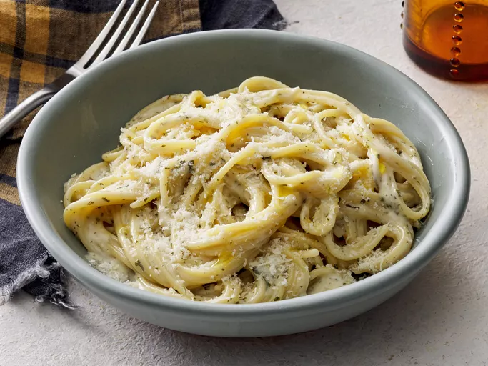

Smooth Garlic Pasta
Description
Simple and very few ingredients: but a wonderful showcase for incredible garlic on pasta.
Ingredients
- 2 teaspoons olive oil
- 4 garlic cloves, minced
- 2 tablespoons butter
- 3 cups chicken broth, or more as needed
- ½ teaspoon ground black pepper
- ¼ teaspoon salt
- ½ pound spaghetti
- 1 cup grated Parmesan cheese
- ¾ cup heavy cream
- 1 ½ tablespoons dried parsley
Directions
- Heat olive oil in a medium pan over medium heat. Add garlic and stir until fragrant, 1 to 2 minutes. Add butter and stir constantly until melted.
- Pour in 3 cups chicken broth; add pepper and salt. Bring to a boil. Add spaghetti and cook, stirring occasionally, until tender yet firm to the bite, about 12 minutes. Add more chicken broth if pasta starts to stick to the pan.
- Add Parmesan cheese, cream, and parsley and mix until thoroughly combined. Serve immediately.